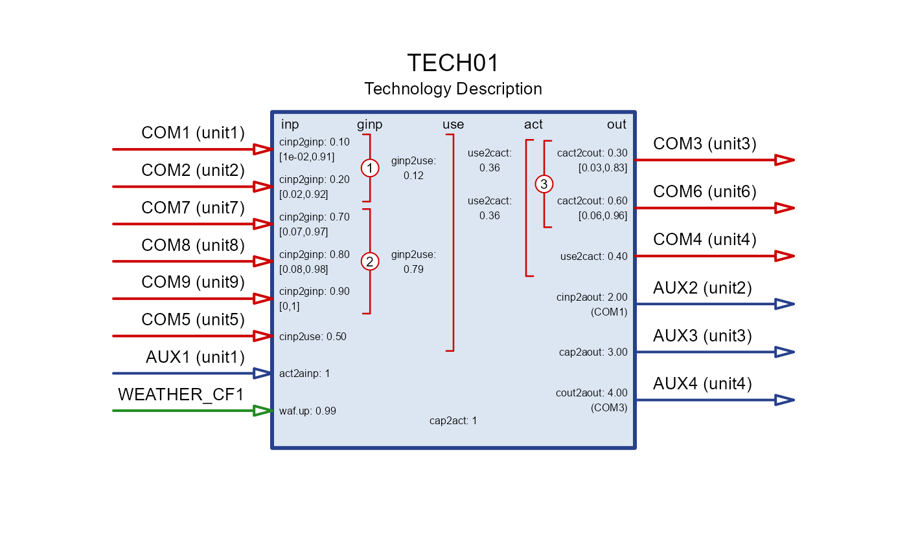
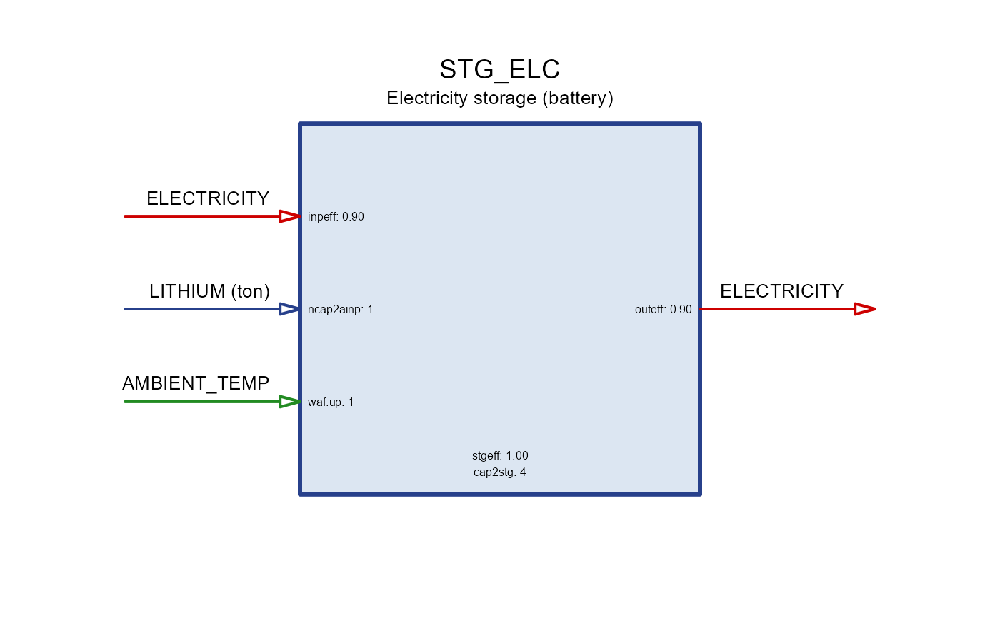
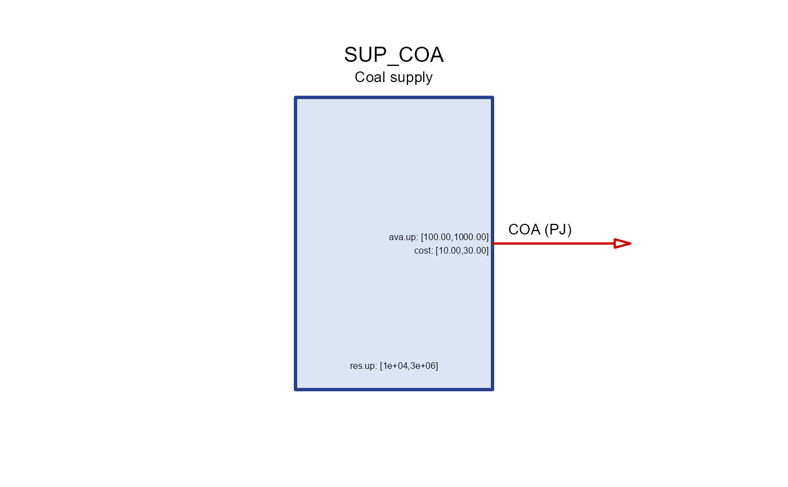
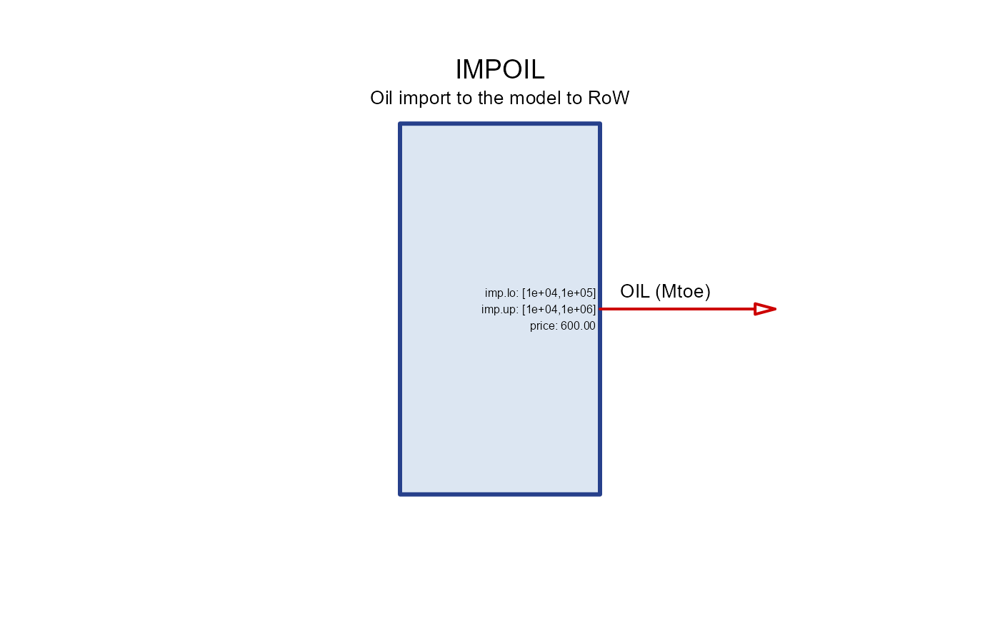
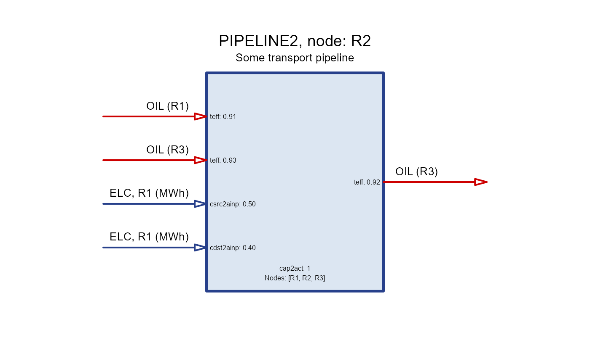

A generic method for drawing a schematic representation of processes-type classes.
Usage
draw(obj, ...)
# S4 method for class 'technology'
draw(obj, ...)
# S4 method for class 'storage'
draw(obj, ...)
# S4 method for class 'supply'
draw(obj, ...)
# S4 method for class 'demand'
draw(obj, ...)
# S4 method for class 'export'
draw(obj, ...)
# S4 method for class 'import'
draw(obj, ...)
# S4 method for class 'trade'
draw(obj, ...)Value
displays a schematic representation of the process, returns NULL.
A figure with a schematic representation of the export process.
A figure with a schematic representation of the import process.
Examples
TECH01 <- newTechnology(
"TECH01",
desc = "Technology Description",
input = data.frame(
comm = c("COM1", "COM2", "COM5", "COM7", "COM8", "COM9"),
group = c("1", "1", NA, "2", "2", "2"),
unit = c("unit1", "unit2", "unit5", "unit7", "unit8", "unit9")
),
output = data.frame(
comm = c("COM3", "COM4", "COM6"),
group = c("3", NA, "3"),
unit = c("unit3", "unit4", "unit6")
),
group = data.frame(
group = c("1", "2", "3"),
desc = c("Group1", "Group2", "Group3"),
unit = "unit"
),
aux = data.frame(
acomm = c("AUX1", "AUX2", "AUX3", "AUX4"),
unit = c("unit1", "unit2", "unit3", "unit4")
),
region = c("R1", "R2", "R3"),
geff = data.frame(
group = c("1", "2"),
ginp2use = c(0.12, 0.789)
),
ceff = data.frame(
comm = c("COM1", "COM2", "COM5", "COM7", "COM8", "COM9", "COM3", "COM4", "COM6"),
cinp2ginp = c(.1, .2, NA, .7, .8, .9, rep(NA, 3)),
cinp2use = c(NA, NA, .5, NA, NA, NA, rep(NA, 3)),
use2cact = c(rep(NA, 6), .36, .4, .36),
cact2cout = c(rep(NA, 6), .3, NA, .6),
share.lo = c(.01, .02, NA, .07, .08, .0, .03, NA, .06),
share.up = c(.91, .92, NA, .97, .98, 1, .83, NA, .96)
),
aeff = data.frame(
acomm = c("AUX1", "AUX2", "AUX3", "AUX4"),
comm = c(NA, "COM1", NA, "COM3"),
act2ainp = c(1, NA, NA, NA),
cinp2aout = c(NA, 2, NA, NA),
cap2aout = c(NA, NA, 3, NA),
cout2aout = c(NA, NA, NA, 4)
),
weather = data.frame(
weather = "WEATHER_CF1",
waf.up = .99
)
)
draw(TECH01)

STG_ELC <- newStorage(
name = "STG_ELC", # used in sets
desc = "Electricity storage (battery)", # for own reference
commodity = "ELECTRICITY", # must match the commodity name in the model
aux = data.frame(
acomm = "LITHIUM", # auxiliary commodity for battery production
unit = "ton" # unit of the auxiliary commodity
),
start = data.frame(
start = 2020 # the first year of the process is available for installation
),
end = data.frame(
end = 2030 # last year of the process is available for installation
),
olife = data.frame(
olife = 20 # operational life of the storage in years
),
seff = data.frame(
stgeff = 0.999, # storage efficiency
inpeff = 0.9, # charging efficiency
outeff = 0.9 # discharging efficiency
),
aeff = data.frame(
acomm = "LITHIUM", # track lithium use for battery production
ncap2ainp = convert(4 * 250, "Wh/kg", "GWh/kt") # lithium per energy capacity
),
af = data.frame(
# af.lo = 0., # lower bound for the capacity factor
af.up = 1. # upper bound for the capacity factor
),
fixom = data.frame(
# region = "R1",
# year = 2020,
fixom = 0.9 # fixed operation and maintenance cost
),
cap2stg = 4, # four-hours of storage
invcost = data.frame(
region = c("R1", NA), # region R1 and all other regions
invcost = c(1e3, 1.1e3) # investment cost in MUSD/GWh of 4-hour storage
),
fullYear = TRUE, # full year storage cycle
weather = data.frame(
weather = "AMBIENT_TEMP", # weather factor for capacity factor
waf.up = 1 # affects upper boundary of capacity factor
# waf.lo = 0.9 # affects lower boundary of capacity factor
)
# region = c("R1", "R2", "R3"),
)
draw(STG_ELC)

SUP_COA <- newSupply(
name = "SUP_COA",
desc = "Coal supply",
commodity = "COA",
unit = "PJ",
reserve = data.frame(
region = c("R1", "R2", "R3"),
res.up = c(2e5, 1e4, 3e6) # total reserves/deposits
),
availability = data.frame(
region = c("R1", "R2", "R3"),
year = NA_integer_,
slice = "ANNUAL",
ava.up = c(1e3, 1e2, 2e2), # annual availability
cost = c(10, 20, 30) # cost of the resource (currency per unit)
),
region = c("R1", "R2", "R3")
)
draw(SUP_COA)

DSTEEL <- newDemand(
name = "DSTEEL",
desc = "Steel demand",
commodity = "STEEL",
unit = "Mt",
dem = data.frame(
region = "UTOPIA", # NA for every region
year = c(2020, 2030, 2050),
slice = "ANNUAL",
dem = c(100, 200, 300)
),
region = "UTOPIA", # optional, to narrow the specification of the demand
)
draw(DSTEEL)
 EXPOIL <- newExport(
name = "EXPOIL", # used in sets
desc = "Oil export from the model to RoW", # for own reference
commodity = "OIL", # must match the commodity name in the model
unit = "Mtoe", # for own reference
exp = data.frame(
region = rep(c("R1", "R2"), each = 2), # export region(s)
year = rep(c(2020, 2050)), # export years
price = 500, # export price in MUSD/Mtoe (USD/t),
exp.up = rep(c(1e3, 1e4), each = 2), # upper bound for export in each year
exp.lo = rep(c(5e2, 0), each = 2) # lower bound for export in each year
)
)
draw(EXPOIL)
EXPOIL <- newExport(
name = "EXPOIL", # used in sets
desc = "Oil export from the model to RoW", # for own reference
commodity = "OIL", # must match the commodity name in the model
unit = "Mtoe", # for own reference
exp = data.frame(
region = rep(c("R1", "R2"), each = 2), # export region(s)
year = rep(c(2020, 2050)), # export years
price = 500, # export price in MUSD/Mtoe (USD/t),
exp.up = rep(c(1e3, 1e4), each = 2), # upper bound for export in each year
exp.lo = rep(c(5e2, 0), each = 2) # lower bound for export in each year
)
)
draw(EXPOIL)
 IMPOIL <- newImport(
name = "IMPOIL", # used in sets
desc = "Oil import to the model to RoW", # for own reference
commodity = "OIL", # must match the commodity name in the model
unit = "Mtoe", # for own reference
imp = data.frame(
region = rep(c("R1", "R2"), each = 2), # import region(s)
year = rep(c(2020, 2050)), # import years
price = 600, # import price in MUSD/Mtoe (USD/t),
imp.up = rep(c(1e4, 1e6), each = 2), # upper bound for import in each year
imp.lo = rep(c(1e4, 1e5), each = 2) # lower bound for import in each year
)
)
draw(IMPOIL)
IMPOIL <- newImport(
name = "IMPOIL", # used in sets
desc = "Oil import to the model to RoW", # for own reference
commodity = "OIL", # must match the commodity name in the model
unit = "Mtoe", # for own reference
imp = data.frame(
region = rep(c("R1", "R2"), each = 2), # import region(s)
year = rep(c(2020, 2050)), # import years
price = 600, # import price in MUSD/Mtoe (USD/t),
imp.up = rep(c(1e4, 1e6), each = 2), # upper bound for import in each year
imp.lo = rep(c(1e4, 1e5), each = 2) # lower bound for import in each year
)
)
draw(IMPOIL)

PIPELINE2 <- newTrade(
name = "PIPELINE2",
desc = "Some transport pipeline",
commodity = "OIL",
routes = data.frame(
src = c("R1", "R1", "R2", "R3"),
dst = c("R2", "R3", "R3", "R2")
),
trade = data.frame(
src = c("R1", "R1", "R2", "R3"),
dst = c("R2", "R3", "R3", "R2"),
teff = c(0.912, 0.913, 0.923, 0.932)
),
aux = data.frame(
acomm = c("ELC", "CH4"),
unit = c("MWh", "kt")
),
aeff = data.frame(
acomm = c("ELC", "CH4", "ELC", "CH4"),
src = c("R1", "R1", "R2", "R3"),
dst = c("R2", "R2", "R3", "R2"),
csrc2ainp = c(.5, NA, .3, NA),
cdst2ainp = c(.4, NA, .6, NA),
csrc2aout = c(NA, .1, NA, .2)
),
olife = list(olife = 60)
)
#> Warning: NAs introduced by coercion to integer range
#> Warning: NAs introduced by coercion to integer range
draw(PIPELINE2, node = "R1")
 draw(PIPELINE2, node = "R2")
draw(PIPELINE2, node = "R2")

draw(PIPELINE2, node = "R3")